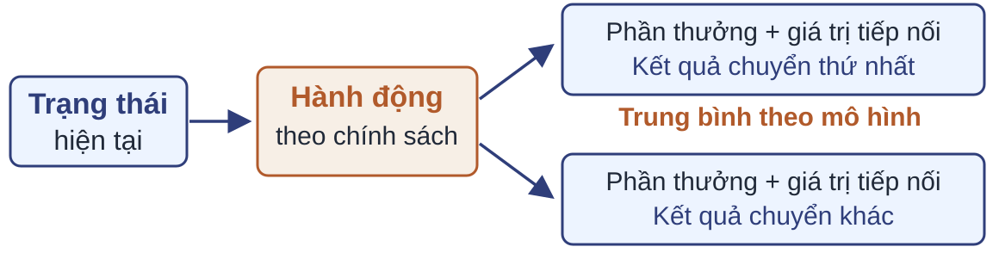
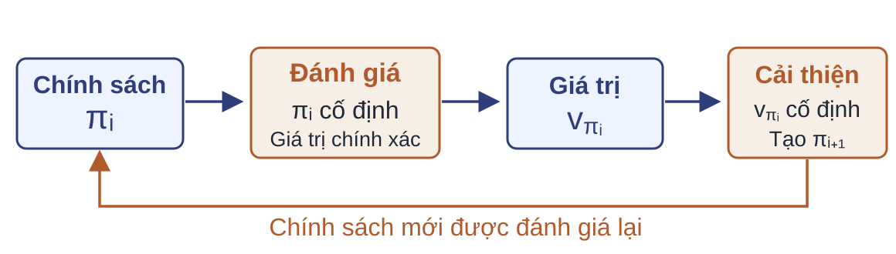
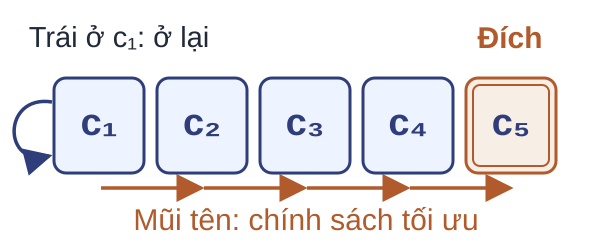
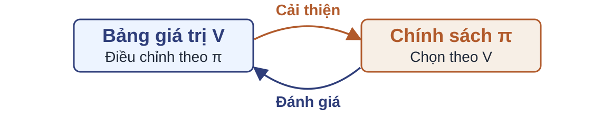
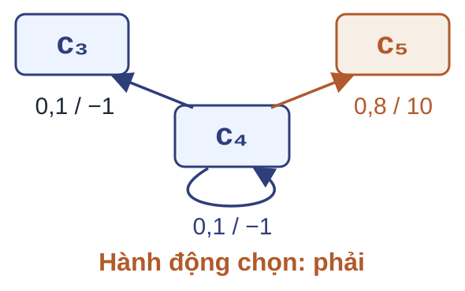

Giải MDP bằng quy hoạch động
Bài 04 · Học tăng cường
Quá trình quyết định Markov (MDP)
Học kỳ 1 · Năm học 2026–2027
Trường Đại học Công nghệ · Đại học Quốc gia Hà Nội
Tính giá trị và lựa chọn chính sách từ mô hình môi trường đã biết.
Phạm vi là lập kế hoạch trong MDP hữu hạn với mô hình chuyển và phần thưởng đã biết. Quy hoạch động dùng mô hình này để tính giá trị của chính sách và xác định lựa chọn tối ưu.
Nguồn: Tạ Việt Cường, Bài 04: Giải MDP , tr. 1; Sutton–Barto, Reinforcement Learning: An Introduction , ấn bản 2, chương 4, tr. 73.
Nội dung và mục tiêu
Mục tiêu Tính $v_\pi$ và cải thiện chính sách. Thực hiện lặp chính sách, lặp giá trị. Chặn sai số bằng phần dư. So sánh ba cách tổ chức tính toán. Kiến thức tiên quyết MDP và tổng phần thưởng chiết khấu. Kỳ vọng có điều kiện. Vector và hệ phương trình tuyến tính. Mọi thuật toán trong bài dùng cùng mô hình chuyển–thưởng và quy ước chiết khấu. Đánh giá giữ chính sách cố định; điều khiển cho phép thay chính sách. Bốn mục tiêu lần lượt ứng với hai mạch đánh giá và cải thiện, hai mạch lặp chính sách và lặp giá trị, các chặn sai số theo phần dư, và mạch tổ chức tính toán. Ba cách tổ chức được so sánh là lặp chính sách, lặp giá trị và cập nhật bất đồng bộ.
Nguồn: Tạ Việt Cường, Bài 04: Giải MDP , tr. 2–3; Sutton–Barto, Reinforcement Learning: An Introduction , ấn bản 2, §4.1–4.7, tr. 74–88.
Lập kế hoạch với mô hình đã biết
Dữ kiện Tập trạng thái $\mathcal S$ và tập hành động $\mathcal A(s)$ hữu hạn. Mô hình chuyển–thưởng $p(s',r\mid s,a)$ đã biết. Phần thưởng bị chặn; $0\le\gamma<1$. Bài toán điều khiển Tìm chính sách có tổng phần thưởng chiết khấu kỳ vọng lớn nhất tại mọi trạng thái.
Quy hoạch động: nhóm thuật toán tính chính sách tối ưu từ mô hình MDP đầy đủ.
$$p(s',r\mid s,a)=\Pr(S_{t+1}=s',R_{t+1}=r\mid S_t=s,A_t=a).$$
Giả thiết Markov: trạng thái và hành động hiện tại xác định phân phối bước kế tiếp.
$\mathcal S$ gồm các trạng thái chưa kết thúc; mỗi $\mathcal A(s)$ hữu hạn và khác rỗng. Nếu có trạng thái kết thúc $s_{\mathrm{term}}$, đặt $\mathcal S^+=\mathcal S\cup\{s_{\mathrm{term}}\}$; nếu không có kết thúc, $\mathcal S^+=\mathcal S$. Trong mọi tổng theo trạng thái kế tiếp, $s'$ chạy trên $\mathcal S^+$. Các bảng giá trị được mở rộng bằng $0$ tại trạng thái kết thúc. Trước khi kết thúc, $S_t\in\mathcal S$, $A_t\in\mathcal A(S_t)$ và $R_{t+1}\in\mathcal R\subset\mathbb R$; tập phần thưởng trong các tổng của bài là hữu hạn. Với mỗi $(s,a)$, $\sum_{s',r}p(s',r\mid s,a)=1$. Bài này xét trạng thái quan sát đầy đủ. Quan sát cảm biến nói chung không tự đồng nhất với trạng thái Markov. Chính sách ngẫu nhiên $\pi(a\mid s)$ là phân phối trên $\mathcal A(s)$; chính sách dừng không phụ thuộc thời điểm. Mô hình là dữ kiện đã biết, khác với chỉ biết phần thưởng của mỗi hành động. Các thuật toán quy hoạch động trong bài đều bắt đầu từ giá trị của một chính sách đã cho; giá trị này là căn cứ để đổi lựa chọn hành động.
Nguồn: Tạ Việt Cường, Bài 04: Giải MDP , tr. 4, 12; Sutton–Barto, Reinforcement Learning: An Introduction , ấn bản 2, §3.1, §4 mở đầu, tr. 73.
MDP hai trạng thái
$s$ $a$ $s'$ $r$ $s_0$ $a$ $s_0$ 1 $s_0$ $b$ $s_1$ 0 $s_1$ $a$ $s_0$ 2 $s_1$ $b$ $s_1$ 3
$\gamma=0{,}9$; mọi chuyển tiếp có xác suất $1$.
Chính sách xác định $\pi_0=(a,a)$: chọn $a$ tại $s_0$ và tại $s_1$, tức $\pi_0(a\mid s)=1$. Bài toán tiếp diễn, không có trạng thái kết thúc.
Tại $s_0$, $a$ cho thưởng tức thời lớn hơn $b$, nhưng chỉ $b$ dẫn tới $s_1$, nơi có thưởng $2$ và $3$.
Cặp $(a,a)$ viết theo thứ tự $(s_0,s_1)$. Hành động có phần thưởng trước mắt cao nhất chưa đủ để kết luận chính sách tối ưu: so sánh hai hành động tại $s_0$ phải tính cả phần thưởng nhận được sau khi tới trạng thái kế tiếp. Mỗi chuyển tiếp ở đây có xác suất 1; không có bước lấy mẫu trong phép tính quy hoạch động.
Nguồn: Tạ Việt Cường, Bài 04: Giải MDP , tr. 17–18
Kiểm tra tổng thưởng chiết khấu
Xuất phát tại $s_1$, theo $\pi_0=(a,a)$, với $\gamma=0{,}9$.
$G_t=\sum_{j=0}^{\infty}\gamma^jR_{t+1+j}$
Câu hỏi: Xác định ba phần thưởng đầu và tổng chiết khấu của chúng. Nêu dữ kiện còn thiếu nếu chỉ biết phần thưởng của từng hành động. Lời giải. Từ $s_1$: các phần thưởng là $2$, $1$, $1$; tổng $2+0{,}9+0{,}9^2=3{,}71$. Cần mô hình chuyển để xác định trạng thái tiếp theo; bảng thưởng riêng không đủ.
Phần thưởng đầu có chỉ số $t+1$ vì nó được nhận sau hành động tại thời điểm $t$. Tổng ba bước là một tổng cắt ngắn, chưa phải giá trị vô hạn.
Nguồn: Tạ Việt Cường, Bài 04: Giải MDP , tr. 5, 17–18
Bài toán đánh giá chính sách
Đánh giá chính sách (bài toán dự đoán): tính tổng thưởng kỳ vọng từ mỗi trạng thái khi luôn theo $\pi_0=(a,a)$.
$G_t=R_{t+1}+\gamma G_{t+1}$

Giá trị tiếp nối $V(s')$ ước lượng tổng thưởng kể từ trạng thái kế tiếp $s'$; thay $G_{t+1}$ bằng $V(s')$ để tính lại từng ô.
Đây là bài toán dự đoán: chính sách là một chính sách cố định bất kỳ, $\pi_0$ chỉ là ví dụ, và chính sách không thay đổi trong suốt đánh giá. Tổng thưởng là tổng chiết khấu $G_t$. Hệ thức $G_t=R_{t+1}+\gamma G_{t+1}$ có được khi tách hạng $j=0$ khỏi tổng chiết khấu và đặt thừa số $\gamma$ ra ngoài phần còn lại. Khi bảng chưa đúng, thay $G_{t+1}$ bằng $V(s')$ chỉ cho một xấp xỉ; khi bảng bằng giá trị chính xác, lấy kỳ vọng hai vế cho phương trình Bellman kỳ vọng. Cập nhật kỳ vọng sử dụng mọi kết quả có thể theo mô hình, khác với một chuyển tiếp lấy mẫu.
Nguồn: Tạ Việt Cường, Bài 04: Giải MDP , tr. 6, 12–14; Sutton–Barto, Reinforcement Learning: An Introduction , ấn bản 2, §4.1, tr. 74–75.
Hai lượt đánh giá đồng bộ
Chính sách $\pi_0=(a,a)$, $\gamma=0{,}9$. Giá trị mới bằng thưởng một bước cộng $0{,}9$ nhân giá trị cũ của trạng thái kế tiếp.
Từ $V_0=(0,0)$ $V_1(s_0)=1+0{,}9\,V_0(s_0)=1$.
$V_1(s_1)=2+0{,}9\,V_0(s_0)=2$.
$V_1=(1,2)$
Từ $V_1=(1,2)$ $V_2(s_0)=1+0{,}9\,V_1(s_0)=1{,}9$.
$V_2(s_1)=2+0{,}9\,V_1(s_0)=2{,}9$.
$V_2=(1{,}9;\,2{,}9)$
Cập nhật đồng bộ: mọi ô của bảng mới đọc từ cùng bảng cũ. Một lượt cập nhật mỗi trạng thái một lần; $V_k$ là bảng sau $k$ lượt.
Cả hai ô đọc ô $s_0$ của bảng cũ vì $\pi_0$ chọn $a$ ở cả hai trạng thái và hành động $a$ đều dẫn tới $s_0$. Giá trị $2{,}9$ của $s_1$ ở lượt hai dùng $V_1(s_0)=1$. Nếu dùng ngay giá trị mới $1{,}9$, phép tính thành $2+0{,}9\cdot1{,}9=3{,}71$; đó là một thuật toán khác, cập nhật tại chỗ.
Nguồn: Tạ Việt Cường, Bài 04: Giải MDP , tr. 14, 17–18
Phương trình Bellman kỳ vọng
Các bảng $V_k$ xấp xỉ hàm giá trị $v_\pi(s)$: kỳ vọng của tổng thưởng khi bắt đầu tại $s$ và theo $\pi$.
$$v_\pi(s)=\mathbb E_\pi[G_t\mid S_t=s].$$
$$v_\pi(s)=\sum_a\pi(a\mid s)\sum_{s',r}p(s',r\mid s,a)\bigl[r+\gamma v_\pi(s')\bigr].$$
$v_{\pi_0}(s_0)=1+0{,}9\,v_{\pi_0}(s_0)$
$v_{\pi_0}(s_1)=2+0{,}9\,v_{\pi_0}(s_0)$
Phép tính của hai lượt đánh giá với $V_k$, $V_{k+1}$ thay bằng cùng $v_{\pi_0}$; chính sách và mô hình xác định nên mỗi tổng còn một hạng.
Kỳ vọng bao gồm ngẫu nhiên của chính sách và môi trường. Dùng $G_t=R_{t+1}+\gamma G_{t+1}$, rồi lấy kỳ vọng theo hành động và kết quả chuyển, cho phương trình Bellman kỳ vọng. Hai vế cùng chứa $v_\pi$, nên đây là phương trình xác định giá trị chính xác. Ký hiệu $\pi(a\mid s)$ là xác suất chọn $a$ tại $s$; với chính sách xác định, xác suất này bằng 1 tại hành động được chọn. Nếu có trạng thái kết thúc, giá trị tiếp nối của nó bằng 0; phần thưởng khi đi vào trạng thái đó vẫn được tính.
Nguồn: Tạ Việt Cường, Bài 04: Giải MDP , tr. 5–6; Sutton–Barto, Reinforcement Learning: An Introduction , ấn bản 2, §4.1, (4.3)–(4.4), tr. 74.
Toán tử đánh giá chính sách
Thay $v_\pi$ ở vế phải phương trình Bellman bằng một bảng $V:\mathcal S\to\mathbb R$ bất kỳ; $p$ và $\pi$ giữ cố định.
$$(T_\pi V)(s)=\sum_a\pi(a\mid s)\sum_{s',r}p(s',r\mid s,a)\bigl[r+\gamma V(s')\bigr].$$
Quy tắc lặp $V_{k+1}=T_\pi V_k$
Hai lượt đã tính:
$V_1=T_\pi V_0$, $\;V_2=T_\pi V_1$.
Nghiệm đánh giá $v_\pi=T_\pi v_\pi$
$v_\pi$ là điểm bất động của $T_\pi$.
Bảng $V$ có $|\mathcal S|$ thành phần chưa kết thúc và được mở rộng bằng $V(s_{\mathrm{term}})=0$. Tổng theo $s'$ gồm cả trạng thái kết thúc, nên phần thưởng của chuyển vào đích vẫn được tính.
Chỉ số $t$ đếm bước tương tác, còn $k$ đếm lượt. Với $V_0=0$, $V_k$ bằng kỳ vọng tổng thưởng cắt ngắn sau $k$ bước. Khởi tạo khác không thì có thêm giá trị cuối ước lượng. Trong ví dụ, cả hai giá trị mới đều sử dụng ô $s_0$ của bảng cũ, đúng với hai phép tính đã thực hiện. Toán tử cung cấp phép cập nhật; thuật toán còn phải quy định cách lưu bảng và thời điểm dừng. Cách xây mục tiêu cập nhật từ ước lượng giá trị tiếp nối được gọi là bootstrapping. Vế phải của $T_\pi$ là phương trình Bellman kỳ vọng với $V$ thay cho $v_\pi$; vì vậy $v_\pi$ là một điểm bất động, còn tính duy nhất cần thêm giả thiết $\gamma<1$.
Với chính sách ngẫu nhiên đều $\pi(a\mid s)=\pi(b\mid s)=1/2$, giữ nguyên mô hình hai trạng thái và $\gamma=0{,}9$. Từ $V_0=0$, một lượt cho $V_1(s_0)=0{,}5(1)+0{,}5(0)=0{,}5$ và $V_1(s_1)=0{,}5(2)+0{,}5(3)=2{,}5$. Kết quả khác chính sách $\pi_0=(a,a)$ vì mỗi trạng thái lấy trung bình hai hành động.
Nguồn: Tạ Việt Cường, Bài 04: Giải MDP , tr. 10, 14; Sutton–Barto, Reinforcement Learning: An Introduction , ấn bản 2, §4.1, (4.5), tr. 74–75.
Thuật toán đánh giá chính sách đồng bộ
Sau hữu hạn lượt, bảng chỉ xấp xỉ $v_\pi$; phép dừng cần một độ lệch tính được từ bảng hiện có.
Phần dư: $\Delta_\pi(V)=\|T_\pi V-V\|_\infty$, với $\|U\|_\infty=\max_s|U(s)|$.
Đầu vào: $p,\pi,\gamma$; ngưỡng $\eta>0$; tối đa $K$ lần nhận bảng mới.
Khởi tạo $V=0$; trạng thái kết thúc giữ giá trị $0$. Tính $W=T_\pi V$ từ bảng $V$ cố định; đặt $\Delta=\|W-V\|_\infty$. Nếu $\Delta\le\eta$ hoặc đã nhận $K$ bảng mới: trả $(V,\Delta)$ và kết quả so ngưỡng. Ngược lại, $V\leftarrow W$ rồi quay lại bước 2. Đầu ra là bảng xấp xỉ $v_\pi$ và phần dư đo trên chính bảng đó. $K$ là số nguyên không âm; một lượt nhận bảng tăng bộ đếm lên 1. Phép tính $W$ để kiểm phần dư không thay đổi $V$. Nếu ngưỡng đạt ở bước kiểm, thuật toán trả $V$, không trả $W$. Sau lần nhận bảng thứ $K$, bước 2 áp dụng $T_\pi$ thêm một lần để đo phần dư của bảng cuối; với $K=0$, thuật toán trả bảng khởi tạo cùng phần dư của nó. Trạng thái kết thúc không có hành động cần đánh giá và luôn giữ giá trị 0. Cập nhật đồng bộ cố định bảng đọc trong cả lượt; thứ tự ghi các ô của $W$ không ảnh hưởng kết quả. Dữ liệu là mô hình đầy đủ. Hết ngân sách không chứng minh hội tụ; nếu phần dư còn vượt ngưỡng, đầu ra chưa đạt yêu cầu độ chính xác. Tính co liên hệ phần dư đo được với sai số so với nghiệm chưa biết.
Trong ví dụ, $V_1=(1,2)$ và $T_{\pi_0}V_1=V_2=(1{,}9;2{,}9)$, nên $\Delta_{\pi_0}(V_1)=\max\{|1{,}9-1|,|2{,}9-2|\}=0{,}9$. Phần dư đo độ không khớp của bảng với phương trình Bellman. Liên hệ giữa phần dư và sai số so với $v_\pi$ chưa biết cần tính co của $T_\pi$.
Nguồn: Tạ Việt Cường, Bài 04: Giải MDP , tr. 14–15; Sutton–Barto, Reinforcement Learning: An Introduction , ấn bản 2, §4.1, tr. 74–75
Hội tụ của đánh giá lặp
Giả thiết: MDP hữu hạn, phần thưởng bị chặn, $0\le\gamma<1$; không áp dụng khi $\gamma=1$.
Tính co. Sau một lượt, độ lệch lớn nhất giữa hai bảng không vượt quá $\gamma$ nhân độ lệch cũ:
$$\|T_\pi U-T_\pi V\|_\infty\le\gamma\|U-V\|_\infty.$$
Lặp đồng bộ từ bảng hữu hạn bất kỳ hội tụ đến nghiệm duy nhất $v_\pi$.
Hệ quả. Phần dư của bảng trả về chặn sai số:
$$\|V-v_\pi\|_\infty\le\frac{\Delta_\pi(V)}{1-\gamma}.$$
Tổng có trọng số xác suất không tăng độ lệch lớn nhất; nhân với $\gamma<1$ tạo tính co. Với $v_\pi=T_\pi v_\pi$, bất đẳng thức tam giác cho $\|V-v_\pi\|_\infty\le \Delta_\pi(V)+\gamma\|V-v_\pi\|_\infty$, từ đó suy ra chặn sai số. Chặn này là hệ quả của tính co, không phải định nghĩa phần dư; phần dư trong chặn được đo trên chính bảng trả về. Với $\gamma=1$, một bài toán có kết thúc cần giả thiết riêng bảo đảm kết thúc và giá trị hữu hạn dưới chính sách đang xét. Chỉ có một trạng thái kết thúc chưa đủ để mọi chính sách đều kết thúc.
Nguồn: Tạ Việt Cường, Bài 04: Giải MDP , tr. 14, 31–32 (mở rộng lập luận sang $T_\pi$); Sutton–Barto, Reinforcement Learning: An Introduction , ấn bản 2, §4.1, tr. 74–75.
Giá trị chính xác của chính sách ban đầu
Đặt $x=v_{\pi_0}(s_0)$, $y=v_{\pi_0}(s_1)$.
$$\begin{aligned}x&=1+0{,}9x,\\y&=2+0{,}9x.\end{aligned}$$
$x=10$, $y=11$.
Bảng $s_0$ $s_1$ $V_0$ 0 0 $V_1$ 1 2 $V_2$ 1,9 2,9 $v_{\pi_0}$ 10 11
Giá trị của chính sách hiện tại trở thành giá trị tiếp nối để so sánh các hành động.
Với $n=|\mathcal S|$, đặt $P_\pi\in\mathbb R^{n\times n}$ là ma trận chuyển giữa các trạng thái chưa kết thúc theo chính sách và $r_\pi,v_\pi\in\mathbb R^n$. Các phần tử là $P_\pi(s,s')=\sum_a\pi(a\mid s)\sum_r p(s',r\mid s,a)$ và $r_\pi(s)=\sum_a\pi(a\mid s)\sum_{s',r}p(s',r\mid s,a)r$. Trong $P_\pi$, $s,s'\in\mathcal S$ và tổng mỗi hàng không vượt $1$; phần xác suất thiếu là chuyển vào trạng thái kết thúc. Tổng định nghĩa $r_\pi$ lấy $s'\in\mathcal S^+$ để tính cả thưởng khi đi vào đích. Hệ Bellman có dạng $(I-\gamma P_\pi)v_\pi=r_\pi$. Với $\gamma<1$, ma trận hệ khả nghịch. Giải hệ trực tiếp và đánh giá lặp tìm cùng nghiệm. Trong ví dụ, $V_1,V_2$ chỉ chứa phần thưởng của một hoặc hai bước do khởi tạo bằng 0.
Nguồn: Tạ Việt Cường, Bài 04: Giải MDP , tr. 6, 18; Sutton–Barto, Reinforcement Learning: An Introduction , ấn bản 2, §4.1, tr. 74.
Kiểm tra đánh giá chính sách
Cho $\pi_0=(a,a)$, $\gamma=0{,}9$ và bảng cũ $V_2=(1{,}9;\,2{,}9)$.
$s$ $a$ $s'$ $r$ $s_0$ $a$ $s_0$ 1 $s_0$ $b$ $s_1$ 0 $s_1$ $a$ $s_0$ 2 $s_1$ $b$ $s_1$ 3
Câu hỏi: Tính bảng đồng bộ $V_3$. Tính $\Delta_{\pi_0}(V_2)$ và chặn sai số của $V_2$. Giải thích vì sao $V_3$ chưa phải là $v_{\pi_0}$. Lời giải. $V_3=(2{,}71;\,3{,}71)$; $\Delta_{\pi_0}(V_2)=\max\{0{,}81;\,0{,}81\}=0{,}81$; chặn sai số $0{,}81/0{,}1=8{,}1$. Sai số thật của $V_2$ so với $(10,11)$ cũng bằng $8{,}1$. $V_3$ chưa thỏa điểm bất động và khác $(10,11)$.
Chuẩn vô cùng lấy độ lệch lớn nhất giữa các trạng thái. Mức thay đổi của lượt hiện tại không bằng sai số thật so với nghiệm chưa biết.
Nguồn: Tạ Việt Cường, Bài 04: Giải MDP , tr. 14, 17–18
Đổi hành động ở bước đầu
Đã biết $v_{\pi_0}=(10,11)$. Bài toán điều khiển: xác định có nên đổi hành động của $\pi_0$ tại một trạng thái.
Lựa chọn ở bước đầu Tại một trạng thái, xét từng hành động có thể thực hiện.
Phần thưởng nhận ngay phụ thuộc hành động đó.
Chính sách tiếp nối Sau bước đầu, tiếp tục theo $\pi_0$.
Giá trị của trạng thái kế tiếp lấy từ cùng $v_{\pi_0}$.
Giá trị nhìn trước của một hành động: $r+\gamma\,v_{\pi_0}(s')$, gồm phần thưởng nhận ngay và giá trị tiếp nối chiết khấu.
Khi chuyển tiếp ngẫu nhiên, giá trị nhìn trước là kỳ vọng của $r+\gamma\,v_{\pi_0}(s')$ theo $p(s',r\mid s,a)$. Bảng $v_{\pi_0}$ được giữ cố định khi so sánh mọi hành động. Thử một hành động rồi tiếp tục theo chính sách cũ khác với thay chính sách vĩnh viễn; định lý cải thiện chính sách nối hai phát biểu đó.
Nguồn: Tạ Việt Cường, Bài 04: Giải MDP , tr. 19; Sutton–Barto, Reinforcement Learning: An Introduction , ấn bản 2, §4.2, tr. 76, 78.
So sánh hai nhánh hành động
Giữ hành động cũ Chọn $a$ tại $s_1$, tới $s_0$.
$2+0{,}9\cdot10=11$
Đổi hành động Chọn $b$ tại $s_1$, ở lại $s_1$.
$3+0{,}9\cdot11=12{,}9$
Hai nhánh đều theo $\pi_0$ sau bước đầu. Giá trị nhìn trước của $b$ vượt $v_{\pi_0}(s_1)=11$.
Số $12{,}9$ chưa phải $v_{\pi_1}(s_1)$, vì chính sách tiếp nối trong phép tính vẫn là $\pi_0$. Giá trị sau khi đổi vĩnh viễn sang $b$ sẽ phải được đánh giá lại.
Nguồn: Tạ Việt Cường, Bài 04: Giải MDP , tr. 17–19; Sutton–Barto, Reinforcement Learning: An Introduction , ấn bản 2, (4.6), tr. 78.
Hàm giá trị hành động
Định nghĩa. $q_\pi(s,a)=\mathbb E_\pi[G_t\mid S_t=s,A_t=a]$: bắt đầu tại $s$, chọn $a$, sau đó theo $\pi$. Tách bước đầu cho dạng tính được:
$$q_\pi(s,a)=\sum_{s',r}p(s',r\mid s,a)\bigl[r+\gamma v_\pi(s')\bigr].$$
$$v_\pi(s)=\sum_a\pi(a\mid s)q_\pi(s,a).$$
Hai giá trị nhìn trước tại $s_1$ là $q_{\pi_0}(s_1,a)=11$ và $q_{\pi_0}(s_1,b)=12{,}9$.
Miền của $q_\pi$ gồm các cặp $s\in\mathcal S$, $a\in\mathcal A(s)$. Trong kỳ vọng định nghĩa $q_\pi$, hành động đầu được ấn định là $a$, kể cả khi $\pi(a\mid s)=0$. Sau hành động đầu, chính sách $\pi$ quyết định các hành động tiếp theo. Thay $v_\pi(s')=\sum_{a'}\pi(a'\mid s')q_\pi(s',a')$ vào công thức một bước cho phương trình Bellman của giá trị hành động:
$$q_\pi(s,a)=\sum_{s',r}p(s',r\mid s,a)\left[r+\gamma\sum_{a'}\pi(a'\mid s')q_\pi(s',a')\right].$$
Giá trị trạng thái là trung bình theo chính sách; giá trị của từng hành động cho phép so sánh một lựa chọn mới với trung bình này.
Nguồn: Tạ Việt Cường, Bài 04: Giải MDP , tr. 5–6, 19; Sutton–Barto, Reinforcement Learning: An Introduction , ấn bản 2, §4.2, (4.6), tr. 78.
Cải thiện chính sách tham lam
Giá trị $12{,}9$ giả định sau bước đầu vẫn theo $\pi_0$. Đổi hành động tại mọi trạng thái cần bảo đảm giá trị không giảm.
Chính sách tham lam: $\pi'(s)\in\arg\max_{a\in\mathcal A(s)}q_\pi(s,a)$, với bảng $v_\pi$ chính xác giữ cố định.
$\arg\max$ là tập hành động đạt cực đại. Phá hòa: giữ hành động cũ nếu nó thuộc tập này; nếu không, chọn theo một thứ tự cố định.
Định lý cải thiện chính sách. Với MDP hữu hạn chiết khấu, nếu $q_\pi(s,\pi'(s))\ge v_\pi(s)$ với mọi $s$ thì $v_{\pi'}(s)\ge v_\pi(s)$ với mọi $s$. Chính sách tham lam thỏa giả thiết vì $\max_a q_\pi(s,a)\ge\sum_a\pi(a\mid s)q_\pi(s,a)=v_\pi(s)$.
Chính sách $\pi,\pi'$ ở quy tắc phá hòa được xét là dừng và xác định. $\arg\max$ là tập hành động cùng đạt giá trị lớn nhất. Với chính sách cũ xác định, hành động cũ là một ứng viên của phép cực đại nên $\max_a q_\pi(s,a)\ge q_\pi(s,\pi(s))=v_\pi(s)$. Với chính sách cũ ngẫu nhiên, bất đẳng thức trên mặt trang cho cùng kết luận vì cực đại không nhỏ hơn trung bình có trọng số. Nếu điều kiện cải thiện nghiêm tại một trạng thái, giá trị mới tăng nghiêm tại trạng thái đó; không khẳng định tăng nghiêm ở mọi trạng thái. Quy tắc phá hòa ngăn việc đổi tùy ý giữa các hành động đồng giá trị; điều này được dùng khi chứng minh lặp chính sách dừng.
Nguồn: Tạ Việt Cường, Bài 04: Giải MDP , tr. 19–21; Sutton–Barto, Reinforcement Learning: An Introduction , ấn bản 2, §4.2, (4.7)–(4.9), tr. 78–79
Chứng minh định lý cải thiện
Với $\pi'$ xác định, $(T_{\pi'}v_\pi)(s)=q_\pi(s,\pi'(s))\ge v_\pi(s)$, tức $v_\pi\le T_{\pi'}v_\pi$ theo từng trạng thái.
$$v_\pi\le T_{\pi'}v_\pi\le(T_{\pi'})^2v_\pi\le\cdots\longrightarrow v_{\pi'}.$$
Tính đơn điệu $U\le V\Rightarrow T_{\pi'}U\le T_{\pi'}V$.
Xác suất và $\gamma$ đều không âm.
Giới hạn của dãy Dãy là đánh giá lặp $\pi'$ xuất phát từ $v_\pi$.
Do tính co, dãy hội tụ về $v_{\pi'}$.
Vậy $v_\pi\le v_{\pi'}$.
Đẳng thức $(T_{\pi'}v_\pi)(s)=q_\pi(s,\pi'(s))$ có được vì $\pi'$ xác định, nên tổng theo hành động chỉ còn một hạng; giả thiết của định lý là bất đẳng thức đầu tiên của dãy. Áp dụng cùng toán tử đơn điệu lên hai vế tạo từng bất đẳng thức tiếp theo. Tính co bảo đảm $(T_{\pi'})^k v_\pi\to v_{\pi'}$ từ bảng khởi tạo hữu hạn $v_\pi$. Lấy giới hạn theo từng trạng thái cho $v_\pi\le v_{\pi'}$. Trong cách chứng minh bằng tổng thưởng, giả thiết phần thưởng bị chặn và $\gamma<1$ làm phần đuôi chiết khấu triệt tiêu.
Nguồn: Tạ Việt Cường, Bài 04: Giải MDP , tr. 21; Sutton–Barto, Reinforcement Learning: An Introduction , ấn bản 2, §4.2, tr. 78–79.
Lần cải thiện thứ nhất
Trạng thái $q_{\pi_0}(s,a)$ $q_{\pi_0}(s,b)$ Hành động mới $s_0$ 10 9,9 $a$ $s_1$ 11 12,9 $b$
Chính sách sau cải thiện $\pi_1=(a,b)$
Tại $s_0$, $a$ vẫn tốt hơn khi tiếp nối theo $\pi_0$.
Đánh giá chính sách mới Hệ Bellman của $\pi_1$: $x=1+0{,}9x$; $y=3+0{,}9y$.
$v_{\pi_1}=(10,30)$
$v_{\pi_1}\ge v_{\pi_0}$ theo từng trạng thái; giá trị tiếp nối tại $s_1$ tăng từ 11 lên 30.
Tại $s_0$, $q_{\pi_0}(s_0,a)=1+0{,}9\cdot10=10$ và $q_{\pi_0}(s_0,b)=0+0{,}9\cdot11=9{,}9$. Vì vậy cải thiện lần đầu chỉ đổi hành động ở $s_1$. Với $x=v_{\pi_1}(s_0)$, $y=v_{\pi_1}(s_1)$, hệ cho $x=10$, $y=30$. Giá trị mới tại $s_1$ là 30 vì chính sách $\pi_1$ chọn $b$ tại mọi lần ở $s_1$. Giá trị nhìn trước $12{,}9$ trước đó chỉ chọn $b$ một lần rồi tiếp tục theo $\pi_0$. Giá trị tiếp nối tăng từ 11 lên 30 có thể thay đổi lựa chọn tại $s_0$ ở lần cải thiện sau.
Nguồn: Tạ Việt Cường, Bài 04: Giải MDP , tr. 18–19; Sutton–Barto, Reinforcement Learning: An Introduction , ấn bản 2, §4.2–4.3, tr. 79–80
Kiểm tra cải thiện chính sách
Cho $\pi_1=(a,b)$ và giá trị chính xác $v_{\pi_1}=(10,30)$.
Câu hỏi: Tính $q_{\pi_1}(s_0,a)$ và $q_{\pi_1}(s_0,b)$. Xác định hành động mới tại $s_0$. Giải thích vì sao lựa chọn tại $s_0$ khác lần cải thiện từ $\pi_0$. Lời giải. $q_{\pi_1}(s_0,a)=1+0{,}9\cdot10=10$; $q_{\pi_1}(s_0,b)=0+0{,}9\cdot30=27$; chọn $b$. Giá trị tiếp nối tại $s_1$ tăng từ 11 lên 30, nên chính sách mới chuyển từ $s_0$ sang $s_1$.
Hành động tối đa hóa phần thưởng tức thời ở $s_0$ là $a$, nhưng phần giá trị tiếp nối thay đổi lựa chọn.
Nguồn: Tạ Việt Cường, Bài 04: Giải MDP , tr. 17–19
Chu trình lặp chính sách
Từ $\pi_0$ sang $\pi_1$, giá trị tại $s_1$ tăng từ 11 lên 30 và lựa chọn tại $s_0$ đổi theo. Lặp chính sách (policy iteration) xen kẽ đánh giá và cải thiện cho đến khi chính sách không đổi.

$i$ đếm lần cải thiện chính sách; $k$ đếm lượt đánh giá; $t$ đếm bước tương tác.
Chính sách thay đổi làm thay đổi giá trị tiếp nối, nên chính sách mới phải được đánh giá lại trước lần cải thiện kế tiếp. Lặp chính sách giải bài toán điều khiển với mô hình đã biết. Hai phép toán thay đổi hai đối tượng khác nhau; giá trị hoặc chính sách phải được giữ cố định đúng lúc.
Nguồn: Tạ Việt Cường, Bài 04: Giải MDP , tr. 13, 19–20; Sutton–Barto, Reinforcement Learning: An Introduction , ấn bản 2, §4.3, tr. 80.
Lặp chính sách trên MDP hai trạng thái
$i$ Chính sách $\pi_i$ Giá trị $v_{\pi_i}$ Sau cải thiện 0 $(a,a)$ $(10,11)$ $(a,b)$ 1 $(a,b)$ $(10,30)$ $(b,b)$ 2 $(b,b)$ $(27,30)$ $(b,b)$
Trạng thái thứ nhất $q_{\pi_2}(s_0,a)=25{,}3$; $q_{\pi_2}(s_0,b)=27$
Trạng thái thứ hai $q_{\pi_2}(s_1,a)=26{,}3$; $q_{\pi_2}(s_1,b)=30$
Chính sách ổn định: cải thiện theo giá trị chính xác của nó không đổi chính sách. Ở đây $\pi_2=(b,b)$ ổn định.
Mỗi hàng đánh giá chính xác chính sách ở cột đầu rồi dùng đúng giá trị của hàng đó để cải thiện. Hàng giữa khôi phục bước $v_{\pi_1}=(10,30)$ cần để giải thích việc $s_0$ đổi sang $b$. Với chính sách $\pi_2=(b,b)$, hệ là $x=0{,}9y$, $y=3+0{,}9y$, nên $(x,y)=(27,30)$. Bốn giá trị hành động $q_{\pi_2}$ là $1+0{,}9\cdot27=25{,}3$, $0{,}9\cdot30=27$, $2+0{,}9\cdot27=26{,}3$ và $3+0{,}9\cdot30=30$. Cả hai hành động đang chọn đều đạt cực đại.
Nguồn: Tạ Việt Cường, Bài 04: Giải MDP , tr. 17–20
Thuật toán lặp chính sách
Đầu vào: mô hình $p$, $0\le\gamma<1$, chính sách xác định $\pi_0$, ngân sách $I_{\max}\ge1$ vòng.
Khởi tạo $\pi=\pi_0$. Đánh giá chính xác $\pi$ bằng hệ Bellman, thu được $v_\pi$. Giữ $v_\pi$ cố định; tạo $\pi'$ tham lam theo $q_\pi$, áp dụng quy tắc phá hòa. Nếu $\pi'=\pi$, trả $(\pi,v_\pi)$ và kết luận chính sách ổn định. Nếu hết ngân sách, trả $(\pi,v_\pi)$ và kết luận chưa ổn định. Nếu còn, nhận $\pi\leftarrow\pi'$ và lặp từ bước 2. Đầu ra là một chính sách cùng giá trị của chính sách đó; khi dừng vì ngân sách, cặp trả về chưa được chứng nhận tối ưu nếu chính sách còn thay đổi. Bộ đếm tăng sau mỗi vòng đánh giá và cải thiện; tối đa $I_{\max}$ vòng được thực hiện. Trong nhiệm vụ có kết thúc, giữ giá trị trạng thái kết thúc bằng 0 và không gán hành động cho trạng thái đó. Bảo đảm dừng hữu hạn ở đây sử dụng đánh giá chính xác. Giải hệ tuyến tính là một cách xác định giá trị đó về mặt toán học. Tính toán số thực hoặc đánh giá lặp theo ngưỡng chỉ trả xấp xỉ và cần kiểm tra phần dư. Một vòng ngoài có thể chứa nhiều lượt đánh giá; không đồng nhất vòng ngoài với một lượt quét giá trị.
Nguồn: Tạ Việt Cường, Bài 04: Giải MDP , tr. 20, 33–34; Sutton–Barto, Reinforcement Learning: An Introduction , ấn bản 2, §4.3, tr. 80, Bài tập 4.4 tr. 82.
Chính sách ổn định là tối ưu
Mục tiêu điều khiển là giá trị tối ưu $v_*(s)=\max_\pi v_\pi(s)$ tại mọi $s$.
Với $\pi$ ổn định, $v_\pi(s)=q_\pi(s,\pi(s))=\max_a q_\pi(s,a)$, tức phương trình Bellman tối ưu :
$$v_\pi(s)=\max_a\sum_{s',r}p(s',r\mid s,a)\bigl[r+\gamma v_\pi(s')\bigr].$$
Trong MDP hữu hạn, thưởng bị chặn và $0\le\gamma<1$, phương trình này có nghiệm duy nhất $v_*$, nên $v_\pi=v_*$.
Với MDP hai trạng thái: $\pi_*=(b,b)$ và $v_*=(27,30)$.
Đẳng thức $v_\pi(s)=q_\pi(s,\pi(s))$ đúng vì $\pi$ xác định. Chính sách ổn định thỏa $\pi(s)\in\arg\max_a q_\pi(s,a)$, vì nếu không, quy tắc phá hòa đã đổi hành động. Đánh giá cho $v_\pi=T_\pi v_\pi$, còn chính sách ổn định tham lam theo $v_\pi$ nên vế phải đồng thời là cực đại trên hành động. Đây là phương trình Bellman tối ưu. Trong MDP hữu hạn chiết khấu, toán tử tối ưu có điểm bất động duy nhất; tính co sẽ được thiết lập khi xét lặp giá trị. Tập hành động hữu hạn bảo đảm cực đại được đạt. Chọn một hành động cực đại ở mỗi trạng thái tạo chính sách tối ưu dừng, xác định. Giá trị hành động tối ưu là $q_*(s,a)=\max_\pi q_\pi(s,a)$, với $v_*(s)=\max_a q_*(s,a)$. Với cặp $(b,b),(27,30)$, cả hai vế Bellman tối ưu bằng nhau ở từng trạng thái.
Nguồn: Tạ Việt Cường, Bài 04: Giải MDP , tr. 7–9, 33; Sutton–Barto, Reinforcement Learning: An Introduction , ấn bản 2, §4.2–4.3, tr. 79–80
Dừng hữu hạn và đánh giá gần đúng
Đánh giá chính xác Số chính sách xác định hữu hạn:
$\displaystyle\prod_{s\in\mathcal S}|\mathcal A(s)|$
Mỗi lần đổi, giá trị không giảm và tăng nghiêm ở ít nhất một trạng thái, nên không chính sách nào lặp lại.
Đánh giá gần đúng Bảng theo ngưỡng chỉ xấp xỉ $v_\pi$.
Chính sách không đổi theo bảng đó chưa đủ chứng nhận tối ưu chính xác.
Đánh giá chính xác cùng quy tắc phá hòa bảo đảm dừng sau hữu hạn vòng.
Nếu hành động cũ không còn trong tập cực đại, hành động mới có giá trị hành động lớn hơn nghiêm tại trạng thái đó. Định lý cải thiện cho giá trị không giảm ở mọi trạng thái và tăng nghiêm ít nhất tại trạng thái đổi. Vì không thể quay về một chính sách đã có giá trị thấp hơn, số chính sách hữu hạn dẫn đến dừng. Chỉ viện dẫn số chính sách hữu hạn không loại được việc dao động giữa các chính sách đồng giá trị; quy tắc phá hòa xử lý trường hợp này. Nếu có $m$ hành động tại mỗi trong $n$ trạng thái, số chính sách là $m^n$. Kết quả này không cho một số vòng nhỏ bảo đảm trong mọi bài toán. Với đánh giá gần đúng, cần kiểm chứng sai số của bảng hoặc điều kiện tối ưu phù hợp.
Nguồn: Tạ Việt Cường, Bài 04: Giải MDP , tr. 33–34; Sutton–Barto, Reinforcement Learning: An Introduction , ấn bản 2, §4.3, tr. 80, Bài tập 4.4 tr. 82.
Kiểm tra điều kiện dừng
Một chương trình giữ $\pi=(a,b)$ và bảng gần đúng $V=(0,0)$.
$s$ $a$ $s'$ $r$ $s_0$ $a$ $s_0$ 1 $s_0$ $b$ $s_1$ 0 $s_1$ $a$ $s_0$ 2 $s_1$ $b$ $s_1$ 3
$\gamma=0{,}9$.
Câu hỏi: Tính bốn giá trị nhìn trước từ $V$. Xác định chính sách tham lam theo bảng đó. Đánh giá kết luận “chính sách không đổi nên đã tối ưu”. Lời giải. Các giá trị nhìn trước là $1,0,2,3$, nên $(a,b)$ tham lam theo $V$. Nhưng $v_{(a,b)}=(10,30)$ và chính sách $(b,b)$ có giá trị $(27,30)$; kết luận tối ưu không hợp lệ. Thiếu đánh giá chính xác hoặc chứng nhận sai số thích hợp.
Phép chọn hành động có thể đúng đối với bảng sai. Để áp dụng định lý dừng chính xác, bảng phải là giá trị của chính sách đang giữ.
Nguồn: Tạ Việt Cường, Bài 04: Giải MDP , tr. 17–20, 34
Cắt ngắn bước đánh giá
Lặp chính sách hoàn tất đánh giá trước mỗi lần cải thiện. Với $\pi_0=(a,a)$ và $V_0=0$, sai số sau $k$ lượt đánh giá là $10\cdot0{,}9^k$; cần $44$ lượt để sai số không quá $0{,}1$.
Nhìn trước Dùng bảng hiện tại để tính từng nhánh hành động.
Chọn cực đại Lấy giá trị nhìn trước lớn nhất tại mỗi trạng thái.
Cập nhật giá trị Dùng kết quả làm bảng cho lượt sau.
Cắt đánh giá còn một lượt cho quy tắc lặp giá trị; bảng hiện tại không cần là giá trị chính xác của một chính sách. Điều kiện dừng dùng phần dư của toán tử tối ưu thay cho chính sách ổn định.
Với $\pi_0=(a,a)$, đánh giá đồng bộ từ bảng không cho $V_k(s_0)=10(1-0{,}9^k)$ và $V_k(s_1)=11-10\cdot0{,}9^k$, nên sai số so với $v_{\pi_0}=(10,11)$ là $10\cdot0{,}9^k$ ở cả hai trạng thái. Vì $0{,}9^{43}\approx0{,}0108$ và $0{,}9^{44}\approx0{,}0097$, cần $44$ lượt để sai số không quá $0{,}1$.
Nếu chọn hành động tham lam theo bảng hiện tại rồi chỉ đánh giá một lượt, giá trị mới tại $s$ bằng giá trị nhìn trước lớn nhất. Hai bước cải thiện và đánh giá vì vậy gộp thành một phép cực đại. Bảng sau mỗi lượt nói chung không bằng giá trị chính xác của chính sách nào, nên tiêu chuẩn chính sách ổn định của lặp chính sách không áp dụng; điều kiện dừng dựa trên phần dư của toán tử tối ưu.
Nguồn: Tạ Việt Cường, Bài 04: Giải MDP , tr. 23; Sutton–Barto, Reinforcement Learning: An Introduction , ấn bản 2, §4.4, tr. 82–83.
Hai lượt lặp giá trị đồng bộ
Từ $V_0=(0,0)$: $V_1=(\max\{1,0\},\max\{2,3\})=(1,3)$.
Lượt thứ hai dùng toàn bộ giá trị tiếp nối từ $V_1$:
Trạng thái Nhánh $a$ Nhánh $b$ Cực đại $s_0$ $1+0{,}9\cdot1=1{,}9$ $0+0{,}9\cdot3=2{,}7$ 2,7 $s_1$ $2+0{,}9\cdot1=2{,}9$ $3+0{,}9\cdot3=5{,}7$ 5,7
$$V_2=(2{,}7;\,5{,}7).$$
Đánh giá giữ một chính sách cố định; lặp giá trị lấy cực đại trên các hành động. Ở lượt hai, cực đại đạt tại $(b,b)$.
Lượt đầu đánh giá chính sách $(a,a)$ cho $(1,2)$, còn lặp giá trị cho $(1,3)$. Sự khác biệt tại $s_1$ đến từ phép cực đại trên các hành động. Hành động đạt cực đại ở lượt một là $(a,b)$ vì $1>0$ tại $s_0$ và $3>2$ tại $s_1$; ở lượt hai là $(b,b)$ vì $2{,}7>1{,}9$ và $5{,}7>2{,}9$. Chính sách tham lam theo bảng có thể đổi giữa các lượt trong khi bảng còn xa nghiệm.
Nguồn: Tạ Việt Cường, Bài 04: Giải MDP , tr. 17, 23–24
Toán tử Bellman tối ưu
Mỗi ô của bảng lượt hai là một giá trị nhìn trước từ $V_1$. Với bảng bất kỳ $V$:
$$Q_V(s,a)=\sum_{s',r}p(s',r\mid s,a)\bigl[r+\gamma V(s')\bigr].$$
Toán tử tối ưu $(T_*V)(s)=\max_a Q_V(s,a)$
Quy tắc lặp $V_{k+1}=T_*V_k$
Với $V=v_\pi$, $Q_V=q_\pi$. Phương trình Bellman tối ưu, đã gặp khi xét chính sách ổn định, viết gọn là $v_*=T_*v_*$.
$Q_V$ là ký hiệu cho phép nhìn trước từ bảng đang xét, không mặc nhiên là giá trị hành động của một chính sách. Cực đại đặt ngoài kỳ vọng: tác tử chọn hành động trước khi kết quả ngẫu nhiên của môi trường được biết. Đổi thứ tự này sẽ cho phép chọn hành động theo kết quả chưa quan sát được. Tại trạng thái kết thúc, giá trị tiếp nối bằng 0 và không lấy cực đại trên một tập hành động rỗng. Giá trị hành động tối ưu $q_*(s,a)=\max_\pi q_\pi(s,a)$ ứng với việc chọn $a$ rồi theo một chính sách tối ưu; với $V=v_*$, $Q_V=q_*$. Phương trình Bellman cho giá trị hành động tối ưu là
$$q_*(s,a)=\sum_{s',r}p(s',r\mid s,a)\left[r+\gamma\max_{a'}q_*(s',a')\right],$$
với số hạng tiếp nối bằng 0 nếu $s'$ là trạng thái kết thúc.
Nguồn: Tạ Việt Cường, Bài 04: Giải MDP , tr. 8, 10, 23; Sutton–Barto, Reinforcement Learning: An Introduction , ấn bản 2, §4.4, (4.10), tr. 83
Thuật toán lặp giá trị đồng bộ
Phần dư tối ưu, thay $T_\pi$ bằng $T_*$ trong $\Delta_\pi$: $\Delta_*(V)=\|T_*V-V\|_\infty$.
Đầu vào: $p,\gamma$; ngưỡng $\eta>0$; tối đa $K$ lần nhận bảng mới.
Khởi tạo $V=0$; trạng thái kết thúc giữ giá trị $0$. Tính $W=T_*V$ từ bảng $V$ cố định; đặt $\Delta=\|W-V\|_\infty$. Nếu $\Delta\le\eta$ hoặc đã nhận $K$ bảng mới: trả $(V,\Delta)$ và kết quả so ngưỡng. Ngược lại, $V\leftarrow W$ rồi quay lại bước 2. Đầu ra gồm thêm chính sách tham lam $\pi_V(s)\in\arg\max_a Q_V(s,a)$, trích từ chính bảng trả về.
Ngân sách $K$ là số nguyên không âm, đếm số lần nhận bảng mới. Nếu dừng vì phần dư nhỏ, $V$ là bảng đã được kiểm; $W=T_*V$ chỉ là bảng dùng để đo phần dư. Sau lần nhận bảng thứ $K$, bước 2 áp dụng $T_*$ thêm một lần để đo phần dư của bảng cuối; với $K=0$, thuật toán trả bảng khởi tạo cùng phần dư của nó. Với MDP hai trạng thái và $K=1$, thuật toán trả $V_1=(1,3)$, $\Delta_*(V_1)=2{,}7$ và chính sách $(b,b)$. Chính sách được trích sau cập nhật từ chính bảng công bố, với một thứ tự phá hòa cố định. Mỗi trạng thái chưa kết thúc cần nhìn trước theo tất cả hành động; không thể chọn hành động bằng cách chỉ lấy cực đại trực tiếp của $V(s)$. Các bước dùng kỳ vọng theo mô hình đầy đủ. Hết ngân sách không chứng minh hội tụ, còn đạt ngưỡng chỉ chứng nhận một chặn sai số giá trị khi kết hợp với tính co.
Nguồn: Tạ Việt Cường, Bài 04: Giải MDP , tr. 24, 34; Sutton–Barto, Reinforcement Learning: An Introduction , ấn bản 2, §4.4, tr. 83
Hội tụ của lặp giá trị
Với cùng giả thiết như $T_\pi$ (MDP hữu hạn, thưởng bị chặn, $0\le\gamma<1$), toán tử $T_*$ cũng co:
$$\|T_*U-T_*V\|_\infty\le\gamma\|U-V\|_\infty.$$
Do đó $T_*$ có điểm bất động duy nhất $v_*$, và lặp đồng bộ hội tụ từ mọi bảng hữu hạn:
$$\|V_k-v_*\|_\infty\le\gamma^k\|V_0-v_*\|_\infty.$$
Chặn theo $\gamma^k$ cho tốc độ hội tụ nhưng chứa $v_*$ chưa biết, nên chưa dùng được làm điều kiện dừng.
Với mỗi trạng thái, dùng $|\max_a x_a-\max_a y_a|\le\max_a|x_a-y_a|$. Hiệu của hai giá trị nhìn trước chỉ còn $\gamma\sum_{s',r}p(s',r\mid s,a)[U(s')-V(s')]$ vì các phần thưởng triệt tiêu. Lấy trị tuyệt đối, dùng tổng xác suất bằng 1 rồi lấy cực đại theo trạng thái cho bất đẳng thức co. Lặp bất đẳng thức với $T_*v_*=v_*$ cho chặn sai số sau $k$ lượt. Hữu hạn lượt thường chỉ tạo xấp xỉ. Trên MDP hai trạng thái từ $V_0=0$, $\|V_0-v_*\|_\infty=30$, nên chặn sau $k$ lượt là $30\cdot0{,}9^k$. Khi $\gamma=1$, hệ số không còn nhỏ hơn 1, nên chứng minh này không cho bảo đảm tương tự.
Nguồn: Tạ Việt Cường, Bài 04: Giải MDP , tr. 31–32; Sutton–Barto, Reinforcement Learning: An Introduction , ấn bản 2, §4.4, tr. 83 cho kết quả hội tụ, chứng minh co theo nguồn bài giảng.
Lan truyền giá trị trên lưới năm ô

Hành động: trái hoặc phải; $c_5$ kết thúc. $\gamma=0{,}9$. Thưởng $10$ khi $c_4\to c_5$; các bước khác nhận $-1$. Trái ở $c_1$: ở lại, nhận $-1$. $k$ $c_1$ $c_2$ $c_3$ $c_4$ $c_5$ 0 0 0 0 0 0 1 −1 −1 −1 10 0 2 −1,9 −1,9 8 10 0 3 −2,71 6,2 8 10 0 4 4,58 6,2 8 10 0
$V_2(c_3)=\max\{-1{,}9;\,8\}=8$. Mỗi lượt đồng bộ truyền giá trị thêm một ô; $V_5=V_4$.
Động lực của lưới này là xác định. $V(c_5)=0$ ở mọi lượt; phần thưởng 10 được nhận một lần khi đi vào $c_5$, không được gán làm giá trị tiếp nối của trạng thái kết thúc. Đi trái ở $c_1$ giữ nguyên trạng thái và nhận thưởng $-1$. Từ bảng $V_1$, đi trái ở $c_3$ cho $-1+0{,}9(-1)=-1{,}9$; đi phải cho $-1+0{,}9(10)=8$. Bảng $V_4=(4{,}58;6{,}2;8;10;0)$ thỏa $T_*V_4=V_4$, tức $V_5=V_4$; đây là $v_*$ của lưới. Tại mỗi ô chưa kết thúc, giá trị nhìn trước khi chọn phải lớn hơn khi chọn trái, nên chính sách tối ưu đi phải tại bốn ô đó. Các mũi tên trong hình biểu diễn chính sách này, không loại bỏ hành động trái khỏi mô hình.
Nguồn: Tạ Việt Cường, Bài 04: Giải MDP , tr. 25–28
Phần dư và điều kiện dừng
Điều kiện dừng cần đại lượng tính được từ $V$. Lập luận như với $\Delta_\pi$ cho:
$$\|V-v_*\|_\infty\le\frac{\Delta_*(V)}{1-\gamma}.$$
Ngưỡng cho sai số giá trị Với $\gamma=0{,}9$, sai số không quá $0{,}1$ khi:
$\Delta_*(V)\le0{,}01$
MDP hai trạng thái $V_1=(1,3)$: $\Delta_*(V_1)=2{,}7$; chặn và sai số thật đều bằng $27$.
Chính sách tham lam $(b,b)$ đã tối ưu.
Chính sách trích có thể đã tối ưu khi bảng giá trị còn cách xa nghiệm.
Trong MDP hai trạng thái, bảng $V_1=(1,3)$ còn khác $v_*=(27,30)$ dù chính sách trích đã là $(b,b)$; chặn phần dư định lượng sai số của bảng này.
Bất đẳng thức tam giác và tính co cho $\|V-v_*\|_\infty\le\|V-T_*V\|_\infty+\|T_*V-T_*v_*\|_\infty\le \Delta_*(V)+\gamma\|V-v_*\|_\infty$. Chuyển vế cho chặn đã nêu. Đây là hệ quả được suy từ tính co. Để sai số giá trị không quá $\varepsilon$, đủ có $\Delta_*(V)\le(1-\gamma)\varepsilon$. Ngưỡng sai số giá trị không tự trở thành ngưỡng cùng cỡ cho tổn thất chính sách. Trong MDP hai trạng thái, $V_{55}\approx(26{,}908702;29{,}908702)$ có phần dư khoảng $0{,}00913$, chặn và sai số thật cùng khoảng $0{,}09130$. Với cập nhật đồng bộ, $\|V_{k+1}-V_k\|_\infty$ là phần dư của $V_k$; nếu trả bảng mới cần gắn chặn với đúng chỉ số.
Nguồn: Tạ Việt Cường, Bài 04: Giải MDP , tr. 31–34
Kiểm tra lặp giá trị trên lưới
Lưới năm ô: $\gamma=0{,}9$ và $V_4=(4{,}58;\,6{,}2;\,8;\,10;\,0)$.
Thưởng $10$ khi $c_4\to c_5$; các bước khác nhận $-1$.
Câu hỏi: Tính hai giá trị nhìn trước tại $c_1$ và tại $c_3$ từ $V_4$; xác định $\Delta_*(V_4)$ và chính sách trích. Giải thích vì sao $V_4(c_5)=0$ dù bước đi vào $c_5$ nhận thưởng $10$. Lời giải. Tại $c_1$: trái $-1+0{,}9\cdot4{,}58=3{,}122$, phải $-1+0{,}9\cdot6{,}2=4{,}58$. Tại $c_3$: trái $-1+0{,}9\cdot6{,}2=4{,}58$, phải $-1+0{,}9\cdot10=8$. Hai ô còn lại cho $\max\{3{,}122;\,6{,}2\}=6{,}2$ tại $c_2$ và $\max\{6{,}2;\,10\}=10$ tại $c_4$. Vậy $T_*V_4=V_4$, $\Delta_*(V_4)=0$, và chính sách trích đi phải tại $c_1,\ldots,c_4$. Thưởng 10 được nhận trên chuyển tiếp đi vào đích; sau kết thúc không còn phần thưởng tiếp nối, nên giá trị của trạng thái kết thúc luôn bằng 0.
Đi trái ở $c_1$ giữ nguyên trạng thái, nên giá trị tiếp nối của nhánh này là $V_4(c_1)$. Phần dư bằng 0 chứng nhận $V_4=v_*$ theo chặn phần dư.
Nguồn: Tạ Việt Cường, Bài 04: Giải MDP , tr. 25–28
Chi phí một lượt quét
Mỗi lượt đồng bộ của đánh giá hoặc lặp giá trị cập nhật mọi trạng thái từ bảng cũ. Đặt $n=|\mathcal S|$, tối đa $m$ hành động, tối đa $d$ trạng thái kế tiếp cho mỗi $(s,a)$; phần thưởng đã gộp thành kỳ vọng.
Biểu diễn mô hình Một lượt lặp giá trị Bộ nhớ mô hình Đặc: xét mọi trạng thái kế tiếp $O(n^2m)$ $O(n^2m)$ Thưa: lưu các chuyển có thể xảy ra $O(nmd)$ $O(nmd)$
Bảng giá trị và chính sách cần $O(n)$ bộ nhớ.
Lượt đồng bộ chỉ đọc bảng cũ và quét mọi trạng thái. Hai hướng thay đổi: dùng ngay giá trị mới trong cùng lượt, và chọn trạng thái cần cập nhật.
Đặt $P(s'\mid s,a)=\sum_r p(s',r\mid s,a)$ và $\bar r(s,a)=\sum_{s',r}p(s',r\mid s,a)r$. Sau khi gộp thưởng, mỗi giá trị nhìn trước là $\bar r(s,a)+\gamma\sum_{s'}P(s'\mid s,a)V(s')$. Mô hình đặc đòi $n$ trạng thái nhân tối đa $m$ hành động nhân $n$ trạng thái kế tiếp. Bước cải thiện có cùng chi phí $O(n^2m)$ với biểu diễn này. Đánh giá chính sách xác định cần $O(n^2)$ mỗi lượt, còn khử Gauss hệ đặc cần $O(n^3)$. Với chính sách ngẫu nhiên, có thể lập $P_\pi,r_\pi$ trước để mỗi lượt đánh giá còn $O(n^2)$, nhưng phải tính cả chi phí lập. Hai bảng đồng bộ vẫn có bộ nhớ $O(n)$. Nếu tính trực tiếp tổng chung theo cả $s'$ và $r$, chi phí phụ thuộc số kết quả chuyển–thưởng được lưu.
Nguồn: Tạ Việt Cường, Bài 04: Giải MDP , tr. 29, 37; Sutton–Barto, Reinforcement Learning: An Introduction , ấn bản 2, §4.5, §4.7, tr. 85, 87–88
Cập nhật tại chỗ và thứ tự trạng thái
Tại chỗ: giá trị mới ghi đè ngay và được dùng cho các ô sau trong cùng lượt.
Đánh giá $\pi_0$ từ bảng $0$, thứ tự $s_0,s_1$:
$V(s_0)\leftarrow1$; $V(s_1)\leftarrow2+0{,}9\cdot1$.
Tại chỗ: $(1;2{,}9)$.
Lặp giá trị ($T_*$) tại chỗ trên lưới, thứ tự $c_4,c_3,c_2,c_1$: một lượt cho $(4{,}58;\,6{,}2;\,8;\,10;\,0)$, bằng $V_4$ của bốn lượt đồng bộ.
Ví dụ hai trạng thái dùng $T_{\pi_0}$ để đánh giá chính sách cố định. Ví dụ lưới dùng $T_*$ để lặp giá trị tại chỗ. Từ bảng không, cập nhật $c_4$ cho $\max\{-1,10\}=10$; cập nhật $c_3$ sau đó dùng ngay giá trị mới của $c_4$, cho $\max\{-1,-1+0{,}9\cdot10\}=8$. Hai ví dụ cùng dùng bảng hiện có, nhưng khác cách chọn hành động.
Lưới theo thứ tự ngược cho $(4{,}58;6{,}2;8;10;0)$ từ bảng không: $c_2$ nhận $\max\{-1;\,-1+0{,}9\cdot8\}=6{,}2$, $c_1$ nhận $\max\{-1;\,-1+0{,}9\cdot6{,}2\}=4{,}58$; đây là tính chất ví dụ này, không phải bảo đảm một lượt cho mọi MDP. Thay đổi lớn nhất trong lượt tại chỗ không trực tiếp bằng phần dư của bảng cuối.
Nguồn: Tạ Việt Cường, Bài 04: Giải MDP , tr. 15, 25–28; Sutton–Barto, Reinforcement Learning: An Introduction , ấn bản 2, §4.1, §4.5, tr. 75, 85.
Thuật toán lặp giá trị bất đồng bộ
Mỗi bước cập nhật một trạng thái do lịch chọn; quét tại chỗ là một lịch cụ thể.
Đầu vào: mô hình, $\gamma$, $V=0$, lịch chọn trạng thái, ngưỡng $\eta$ và ngân sách cập nhật.
Chọn một trạng thái chưa kết thúc $s$ theo lịch. Nhận $V(s)\leftarrow(T_*V)(s)$ từ bảng hiện có; giữ các ô khác. Tại các mốc kiểm tra và khi hết ngân sách, cố định bảng để tính $\Delta_*(V)$. Dừng nếu đạt ngưỡng hoặc hết ngân sách; trả $V$, chính sách tham lam theo $V$ và phần dư. Với MDP hữu hạn chiết khấu và giá trị mới nhất, nếu mọi trạng thái chưa kết thúc được cập nhật vô hạn lần thì $V\to v_*$.
Quy trình này dùng $T_*$ để giải bài toán điều khiển; thay bằng $T_\pi$ sẽ đánh giá một chính sách cố định. Cơ chế đọc giá trị mới nhất được giữ nguyên. Trên MDP hai trạng thái, từ bảng $(1,0)$, cập nhật tối ưu tại $s_1$ cho $\max\{2+0{,}9\cdot1,3+0{,}9\cdot0\}=3$, còn đánh giá $\pi_0$ cho $2{,}9$.
Ngưỡng $\eta>0$ và ngân sách hữu hạn là các tham số thực hành. Tại các mốc kiểm tra, nếu phần dư vượt ngưỡng và còn ngân sách thì tiếp tục cập nhật. Trạng thái kết thúc giữ giá trị 0; điều kiện cập nhật vô hạn lần áp dụng cho mọi trạng thái chưa kết thúc. Bảo đảm xét cập nhật dùng giá trị mới nhất, không bao gồm truyền giá trị trễ. Quét tại chỗ là một lịch hệ thống; quy hoạch động bất đồng bộ tổng quát không cần chia thành các lượt quét toàn bộ. Áp dụng lịch $c_4,c_3,c_2,c_1$ cho lưới từ bảng không được $(4{,}58;6{,}2;8;10;0)$. Cố định bảng cuối rồi tính toàn bộ $T_*V$ cho đúng chính bảng đó, nên phần dư bằng 0; chính sách trích đi phải tại mọi ô chưa kết thúc. Độ thay đổi lớn nhất trong lượt tại chỗ không được đồng nhất với phần dư của bảng cuối.
Nguồn: Tạ Việt Cường, Bài 04: Giải MDP , tr. 15; Sutton–Barto, Reinforcement Learning: An Introduction , ấn bản 2, §4.5, tr. 85–86.
Lặp chính sách tổng quát
Lặp chính sách tổng quát (GPI) gọi chung sự xen kẽ giữa đánh giá và cải thiện.

Lặp chính sách Đánh giá đủ rồi cải thiện.
Lặp giá trị Một lượt cập nhật tối ưu.
Bất đồng bộ Xen kẽ từng trạng thái.
Khi cả hai cùng ổn định, $V=v_\pi$ và $\pi$ tham lam theo $V$, nên $V=T_*V=v_*$.
Ba quy trình đã xét đều xen kẽ đánh giá và cải thiện; chúng khác nhau ở mức hoàn tất đánh giá trước mỗi lần cải thiện. GPI là khuôn mô tả sự tương tác của hai quá trình với mức độ hoàn tất khác nhau. Tại điểm ổn định chính xác chung, $V=v_\pi$ và $\pi(s)\in\arg\max_a Q_V(s,a)$. Do đó $V=T_\pi V=T_*V$, suy ra $V=v_*$ trong MDP hữu hạn chiết khấu. Đánh giá thay đổi giá trị cho phù hợp chính sách; cải thiện thay đổi chính sách cho phù hợp giá trị. Lặp chính sách, lặp giá trị và lịch bất đồng bộ đã xét là các cách tổ chức sự tương tác này. Khuôn GPI không tự bảo đảm mọi cách xen kẽ tùy ý hay mọi đánh giá gần đúng đều hội tụ. Các cách tổ chức cập nhật đã xét vẫn cần biểu diễn trạng thái hữu hạn và mô hình đã biết. CartPole có trạng thái liên tục, nên việc tạo biểu diễn hữu hạn còn phải xét ảnh hưởng của gộp trạng thái.
Nguồn: Tạ Việt Cường, Bài 04: Giải MDP , tr. 13, 23, 29; Sutton–Barto, Reinforcement Learning: An Introduction , ấn bản 2, §4.6, tr. 86–87.
Rời rạc hóa trạng thái CartPole
Các quy trình trên cần trạng thái hữu hạn và $p$ đã biết; CartPole có trạng thái liên tục.
Trạng thái $(x,\dot x,\theta,\dot\theta)$; chia lần lượt $3,3,6,6$ khoảng:
$3\cdot3\cdot6\cdot6=324$
Hai hành động: đẩy trái hoặc đẩy phải.
324 tổ hợp là biểu diễn xấp xỉ. Vẫn cần mô hình chuyển–thưởng và kiểm tra ảnh hưởng của gộp trạng thái.
Ánh xạ rời rạc hóa có dạng $(x,\dot x,\theta,\dot\theta)\mapsto(b_x,b_{\dot x},b_\theta,b_{\dot\theta})$, trong đó mỗi $b$ là chỉ số khoảng của biến tương ứng. Hai trạng thái liên tục trong cùng ô có thể dẫn đến phân phối chuyển khác nhau. Do đó rời rạc hóa chưa tự bảo đảm tính Markov, cũng chưa cung cấp mô hình $p(s',r\mid s,a)$. Số 324 đếm các tổ hợp khoảng, chưa mặc nhiên bao gồm trạng thái kết thúc riêng nếu cách biểu diễn cần nó. Tăng số khoảng làm tăng số ô theo tích các kích thước; giảm số khoảng tăng mức gộp. Chính sách tối ưu của mô hình gộp chưa tự là chính sách tối ưu trong môi trường liên tục.
Nguồn: Tạ Việt Cường, Bài 04: Giải MDP , tr. 35–37; Sutton–Barto, Reinforcement Learning: An Introduction , ấn bản 2, chương 4 mở đầu, tr. 73.
Kiểm tra lịch cập nhật và mô hình
Lịch cập nhật MDP hai trạng thái, khởi tạo $V=0$, chỉ cập nhật $s_0$ mãi mãi.
Biểu diễn CartPole Có bảng 324 tổ hợp nhưng chưa có phân phối chuyển–thưởng.
Câu hỏi: Ở tình huống thứ nhất, xác định giới hạn của $V(s_0)$ và giá trị của $V(s_1)$; so sánh với $v_*=(27,30)$ và nêu điều kiện hội tụ bị vi phạm. Xác định dữ kiện còn thiếu để chạy quy hoạch động ở tình huống thứ hai. Lời giải. $V(s_1)$ không được cập nhật nên giữ $0$ thay vì $30$. Khi đó mỗi cập nhật tại $s_0$ là $V(s_0)\leftarrow\max\{1+0{,}9V(s_0);\,0+0{,}9\cdot0\}$, hội tụ tới nghiệm $x=10$ của $x=\max\{1+0{,}9x;\,0\}$ thay vì $27$. Điều kiện mọi trạng thái chưa kết thúc được cập nhật vô hạn lần bị vi phạm. CartPole còn thiếu mô hình $p(s',r\mid s,a)$ và đánh giá tính phù hợp Markov của biểu diễn gộp.
Tăng số lần tính không khắc phục việc bỏ một trạng thái hoặc thiếu mô hình.
Nguồn: Tạ Việt Cường, Bài 04: Giải MDP , tr. 15, 35–37; Sutton–Barto, Reinforcement Learning: An Introduction , ấn bản 2, §4.5, tr. 85.
Kết quả của bài toán lập kế hoạch
Mô hình chuyển–thưởng đã biết cho phép đánh giá chính sách và so sánh các lựa chọn theo tổng thưởng dài hạn.
Lặp chính sách Đánh giá chính sách → cải thiện → đánh giá lại.
Lặp giá trị Cập nhật tối ưu trên bảng hiện tại → trích chính sách.
$$\pi_*=(b,b),\qquad v_*=(27,30).$$
Kết quả được kiểm bằng điều kiện ổn định chính xác hoặc phần dư trên chính bảng trả về.
Điểm chung của hai thuật toán là sử dụng kỳ vọng theo mô hình và giá trị tiếp nối. Bootstrapping là dùng ước lượng giá trị tiếp nối để xây mục tiêu cập nhật; yêu cầu có mô hình là điều kiện riêng để tính đầy đủ kỳ vọng trong các phương pháp quy hoạch động đã xét. Số lượt hữu hạn cần đi kèm phần dư hoặc điều kiện dừng chính xác để đánh giá độ tin cậy. Bốn mục tiêu nêu ở phần mở đầu ứng với các phép tính đánh giá và cải thiện trên MDP hai trạng thái, hai thuật toán lặp cho cùng nghiệm $(b,b)$, $(27,30)$, chặn sai số theo phần dư, và bảng so sánh cách tổ chức cập nhật ở trang sau.
Nguồn: Tạ Việt Cường, Bài 04: Giải MDP , tr. 18–24, 38; Sutton–Barto, Reinforcement Learning: An Introduction , ấn bản 2, §4.8, tr. 88–89.
So sánh các phương pháp quy hoạch động
Phương pháp Tổ chức cập nhật Kiểm tra đầu ra Lặp chính sách Đánh giá rồi cải thiện Đánh giá chính xác; chính sách ổn định Lặp giá trị Cực đại từ bảng cũ Phần dư của bảng cuối Bất đồng bộ Cập nhật từng trạng thái Phần dư toàn cục; lịch bao phủ
Cả ba phương pháp đều giả thiết $0\le\gamma<1$, mô hình hữu hạn đã biết và phần thưởng bị chặn.
Thời gian tính phụ thuộc mô hình, khởi tạo, lịch cập nhật và ngưỡng sai số.
Một lần lặp chính sách ngoài không tương đương một lượt lặp giá trị. Khi $\gamma$ gần 1, chặn co yếu hơn; đây không phải dự đoán tuyệt đối về thời gian chạy trên mọi bài toán.
Nguồn: Tạ Việt Cường, Bài 04: Giải MDP , tr. 29–34; Sutton–Barto, Reinforcement Learning: An Introduction , ấn bản 2, §4.7–4.8, tr. 87–89.
Bài tập lưới ngẫu nhiên

Đúng hướng: $0{,}8$; đứng yên: $0{,}1$; ngược hướng: $0{,}1$.
Hành động: trái hoặc phải. $\gamma=0{,}9$; $V(c_5)=0$. Ra ngoài tại $c_1$: ở lại. Thưởng $10$ khi chuyển vào $c_5$, kể cả do trượt; các bước khác nhận $-1$. Câu hỏi: Từ $V_0=0$, tính $V_1$ và $V_2(c_3)$ bằng lặp giá trị đồng bộ. Ghi đủ xác suất và phần thưởng.
Với $V_0=0$, tại $c_4$ chọn phải cho $0{,}8(10)+0{,}1(-1)+0{,}1(-1)=7{,}8$; chọn trái cho $0{,}8(-1)+0{,}1(-1)+0{,}1(10)=0{,}1$. Ở các ô khác, phần thưởng bước đầu đều bằng $-1$. Bởi vậy $V_1=(-1;-1;-1;7{,}8;0)$. Từ $c_3$, chọn phải ở lượt sau cho $-1+0{,}9[0{,}8(7{,}8)+0{,}1(-1)+0{,}1(-1)]=4{,}436$. Chọn trái cho $-1+0{,}9[0{,}8(-1)+0{,}1(-1)+0{,}1(7{,}8)]=-1{,}108$, nên $V_2(c_3)=4{,}436$. Với bảng bất kỳ,
$$Q_V(c_4,\text{phải})=0{,}8\cdot10+0{,}1[-1+0{,}9V(c_4)]+0{,}1[-1+0{,}9V(c_3)].$$
Chuyển vào đích nhận thưởng 10 kể cả khi đó là kết quả đi ngược hành động đã chọn. Tại $c_1$, xác suất chuyển ra ngoài được gộp vào xác suất ở lại. Các quy ước này xác định đủ mô hình để áp dụng thuật toán.
Nguồn: Bài tập tuần 4, hw04.pdf tr. 1
Kiểm tra nghiệm tối ưu
MDP hai trạng thái, $\gamma=0{,}9$; hai bảng $U=(10,30)=v_{(a,b)}$ và $V=(27,30)$.
$s$ $a$ $s'$ $r$ $s_0$ $a$ $s_0$ 1 $s_0$ $b$ $s_1$ 0 $s_1$ $a$ $s_0$ 2 $s_1$ $b$ $s_1$ 3
Câu hỏi: Tính $T_*U$, $T_*V$, $\Delta_*(U)$, $\Delta_*(V)$ và hai chính sách tham lam. Xác định bảng nào là $v_*$; nêu căn cứ. Nếu chỉ có bộ mô phỏng sinh từng chuyển tiếp, phép tính nào chưa được cung cấp trực tiếp? Lời giải. Với $U$: tại $s_0$, $\max\{1+0{,}9\cdot10;\,0+0{,}9\cdot30\}=\max\{10;27\}=27$; tại $s_1$, $\max\{2+0{,}9\cdot10;\,3+0{,}9\cdot30\}=\max\{11;30\}=30$. Vậy $T_*U=(27,30)$, $\Delta_*(U)=17$, chính sách tham lam $(b,b)$. Với $V$: các giá trị nhìn trước là $25{,}3;\,27$ tại $s_0$ và $26{,}3;\,30$ tại $s_1$, nên $T_*V=V$, $\Delta_*(V)=0$, chính sách tham lam $(b,b)$. Do đó $V=v_*$; căn cứ là MDP hữu hạn, thưởng bị chặn, $\gamma=0{,}9<1$ và tính duy nhất điểm bất động của $T_*$. Bảng $U$ là giá trị chính xác của $(a,b)$ nhưng không thỏa phương trình Bellman tối ưu; chặn phần dư cho $\|U-v_*\|_\infty\le170$, còn sai số thật là $17$. Bộ mô phỏng chưa cung cấp trực tiếp kỳ vọng đầy đủ theo $p$; cần xây mô hình hoặc phương pháp lấy mẫu ngoài phạm vi.
Phần dư bằng 0 chứng nhận điểm bất động trong mô hình đã cho. Chứng nhận đó phụ thuộc độ đúng của mô hình; không tự chuyển thành bảo đảm cho một mô hình xấp xỉ khác.
Nguồn: Tạ Việt Cường, Bài 04: Giải MDP , tr. 17–19, 31–38
Tài liệu đọc và bài tập tiếp nối
Richard S. Sutton và Andrew G. Barto, Reinforcement Learning: An Introduction , ấn bản 2.
§4.1–4.4, tr. 74–84: đánh giá, cải thiện, lặp chính sách và lặp giá trị. §4.5–4.8, tr. 85–89: bất đồng bộ, GPI, hiệu quả và giới hạn. Bài tập 4.3 và 4.4: giá trị hành động và phá hòa. Ví dụ 4.1: lưới $4\times4$ không chiết khấu; cần điều kiện kết thúc riêng. Hoàn thiện bài lưới ngẫu nhiên từ dữ kiện bài tập tuần 4. Khi không có $p$, giá trị phải ước lượng từ các chuyển tiếp lấy mẫu.
Ghi chú bài giảng Bài 04
Các mục §4.1–4.4 xây dựng ba thuật toán chính từ phương trình Bellman; các mục sau thay cách tổ chức cập nhật và phân tích giới hạn của mô hình dạng bảng. Bài tập 4.3 yêu cầu viết phiên bản đánh giá giá trị hành động; Bài tập 4.4 xét lỗi dừng do phá hòa không ổn định. Ví dụ 4.1 sử dụng $\gamma=1$ và chính sách ngẫu nhiên đều trong lưới có kết thúc; bảo đảm đánh giá phụ thuộc điều kiện kết thúc và giá trị hữu hạn dưới chính sách đang xét. Chặn chia cho $1-\gamma$ không áp dụng cho trường hợp đó. Mọi phép tính trong bài dùng kỳ vọng đầy đủ theo $p$; câu cuối của trang chỉ ra giới hạn này, là điểm xuất phát của dự đoán phi mô hình ở bài sau. Ghi chú bài giảng có các ví dụ bổ sung với bộ số riêng; định nghĩa và điều kiện của thuật toán được dùng nhất quán.
Nguồn: Sutton–Barto, Reinforcement Learning: An Introduction , ấn bản 2, §4.1–4.8, tr. 74–89, Bài tập 4.3 tr. 76, Bài tập 4.4 tr. 82; Bài tập tuần 4, hw04.pdf tr. 1.